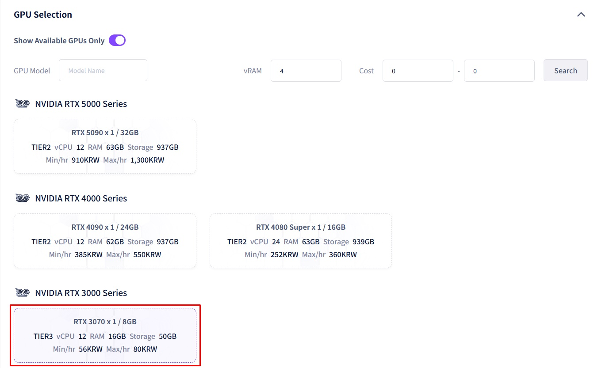
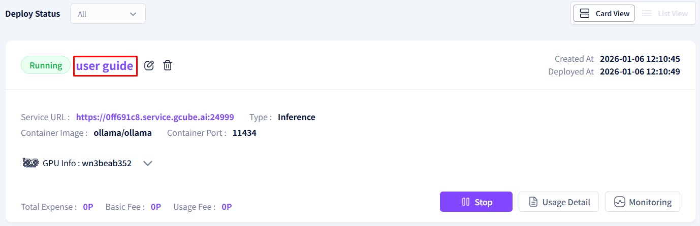
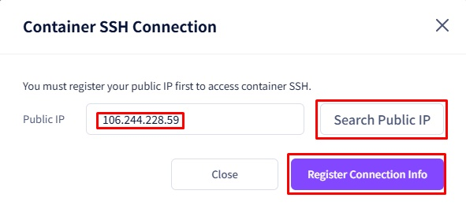

Ollama User Guide - DeepSeek
0. Overview
- What is Ollama?
- A platform designed to execute and manage LLMs (Large Language Models)
- Enables users to download and test open-source language models in a local environment
- Key supported language models include:
- Llama3
- The latest language model developed by Meta, featuring superior natural language processing performance
- Phi 3
- Developed by Microsoft Research, this model possesses exceptional reasoning and language understanding capabilities
- Mistral
- Optimized for various linguistic tasks, boasting high-performance efficiency
- Gemma 2
- Developed by Google, showing strength in natural language processing and generation tasks
- CodeGemma
- Specialized in code generation and completion, supporting a wide range of programming tasks
- Llama3
- Users can run and manage open-source or custom models via a user-friendly interface using Ollama, including model creation and deployment
1. gcube Platform Workload Service Registration Process
- Workload Creation and Deployment
- Access gcube.ai and navigate to the Workload page ( https://gcube.ai/ko/demand/workload/list )
- Register a new workload or modify an existing one by entering the required information on the page.

- Description Overview
- Enter the workload name
- ex : ollama
- Enter the workload name

- Container Overview
- Select the storage type and container image
- Use the official image provided by Ollama on Docker Hub
- Reference URL : https://hub.docker.com/r/ollama/ollama
- Storage Type: Docker Hub
- Container Image: ollama/ollama:latest
- Container ports are automatically populated by checking the metadata (ExposedPorts) of the container image layer. (For Ollama, the port is 11434)
- Use the official image provided by Ollama on Docker Hub
- Select the storage type and container image

- GPU Selection Overview
- Select the desired performance specification
- Tier1 : High Performance
- Tier2 : High Reliability
- Tier3 : Individual Users
- GPU Memory: Filter available GPUs
- In this example, select Tier 3 RTX 3070
- Select the desired performance specification

- Option Overview (optional)
- Container Command
- Corresponds to the CMD instruction in a Dockerfile (the command to be executed when the container starts)
- Format : CMD ["executable", "param1", "param2"] / CMD [“echo“, “Hello, world!“]
- Corresponds to the CMD instruction in a Dockerfile (the command to be executed when the container starts)
- Container Environment Variables
- Corresponds to the ENV instruction in a Dockerfile (environment variables to be used inside the container)
- 형식 : ENV
/ ENV DEF_PORT 9999
- 형식 : ENV
- Corresponds to the ENV instruction in a Dockerfile (environment variables to be used inside the container)
- Replicas
- The number of container instances running simultaneously across different nodes
- Purpose:
- Enhances application reliability and throughput
- Ensures service continuity even if a specific node fails
- Reduces latency and improves the developer experience
- L7 Consistent Hashing Technique:
- Routes requests to specific backends based on a key
- Uses a hashing algorithm to distribute traffic consistently
- Guarantees that only a minimum number of requests are shifted to other servers when nodes or servers are added or removed
- CUDA
- Select the CUDA version
- Shared Memory
- Refers to the shared memory area (/dev/shm) provided by Linux systems
- An area designed for inter-process data sharing (acts as high-speed temporary storage for large-scale data processing)
- Container Command

- Estimated Cost Overview
- Displays the maximum hourly price information based on the selected specifications
- Proceed with registration after reviewing the details
- If ‘Instant Deployment’ is selected, registration and deployment will proceed immediately

2. How to Use gcube Platform Workload Services
- Checking Created Workloads
- On the Workload page(https://gcube.ai/ko/demand/workload/list ), click on the Workload Name to enter the Workload Details page

- Workload Details Overview
- General: Workload ID, description, type, status, Service URL, etc.
- Container: Container image, container port, storage type, creation date/time, deployment date/time, termination date/time, etc.
- Target Specification: Target node, GPU memory, GPU information, etc.
- Options: Container command, container environment variables, replicas, minimum CUDA version, shared memory information, etc.
- Deployment Status: Container deployment events, node information, pod details, pod status, container logs, container terminal, container SSH access, etc.

- When Pod Status is ‘Running’
- Click ‘Container SSH’ to view the Public IP and register access credentials
- Verify SSH access information during the credential registration process.
- Click ‘Container SSH’ to view the Public IP and register access credentials


- Connect to the container by entering the SSH access information confirmed above into a terminal program (e.g., PuTTY)
- Enter the IP address, Port, User ID, and Password


- In the CLI, enter the following command to download and run the DeepSeek language model (approx. 4.7GB)
- ollama run deepseek-r1:8b

- You can now use AI inference services with the DeepSeek model, similar to ChatGPT
- ex)
Q : How to make pizza?
A :
Making pizza can be a fun and rewarding process! Here's a basic guide to making your own pizza at home:
Pizza dough:
- Activate yeast: In a small bowl, mix 1 teaspoon of sugar with 1 cup of warm water (around 110°F). Sprinkle in the active dry yeast, cover, and let it sit for 5-10 minutes until it becomes frothy.
- Mix dough: In a large bowl, combine 2 cups of all-purpose flour, salt, and olive oil. Add the yeast mixture and mix until the dough forms a sticky ball.
- Knead dough: knead the dough on a floured surface for about 8-10 minutes until it becomes smooth and elastic.
Assembling the pizza:
- Prepare sauce: Make your favorite tomato sauce or pesto as the base.
- Build the pizza: Roll out the dough to your desired thickness (thinner for crispy crust, thicker for a chewy texture). Transfer to a baking sheet or pizza stone.
- Add toppings: Add your preferred toppings, such as cheese, vegetables, or meats, leaving space for the edges.
Baking:
- Preheat oven: Preheat your oven to the highest temperature (around 500-550°F) for about 10-15 minutes.
- Cook pizza: Place the prepared pizza on a baking sheet or directly on the pizza stone. Cook for 10-15 minutes, or until the crust is golden and cheese is bubbly.
Tips:
- For a crispy crust, brush the dough with olive oil before baking.
- Add toppings in even amounts to avoid overcrowding the pizza.
- Use a pizza peel or cardboard to slide the pizza off the stone.
Enjoy your homemade pizza!
ex2)